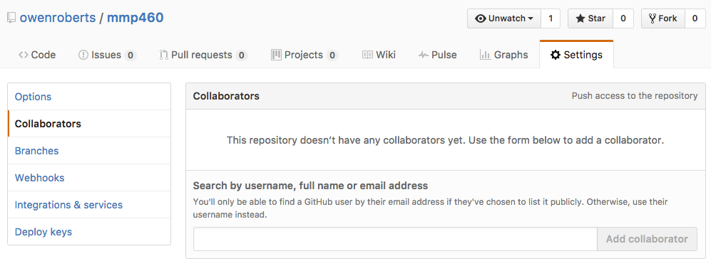
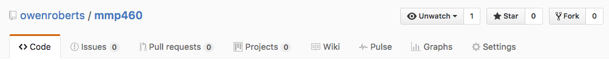
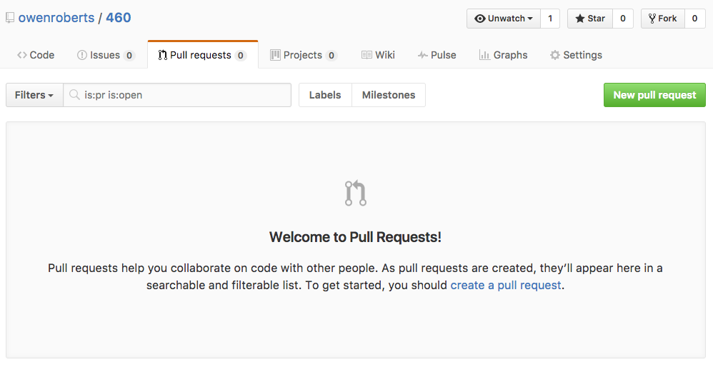

By default each commit will be on the master branch. Each time you commit some code you create a new snapshot. A branch consists of this series of snapshots and tracks the changes that happen between each commit.
Branching allows you to work on new parts of your code without changing anything in the master or other branches. You can create a new branch for a new feature, add commits, and then merge back to your master branch.
$ git checkout <branch> // checkout a branch
$ git checkout -b new_feature // create a branch called "new feature"
$ git checkout master // return HEAD to master branch
$ git checkout abc123 // checkout a specific commit on the current branchBranching adds a new commit and moves the HEAD to the new branch.
Commits can be made on the master branch separately from the feature branch.
Once you have finished the new feature, you can merge back to the master branch.
$ git checkout master
$ git merge new_featureThe merge will create a new snapshot on the master branch.
$ git revert <commit>
$ git revert def567Revert will remove the changes from a specific commit. If that commit occurred several snapshots previous to the HEAD, it will not effect commits that came afterward.
$ git rebase <branch>
$ git rebase masterRebase will copy all of the commits made after a branch was created to the branch.
When you have finished working on a specific branch and you have committed the changes to the master, you may consider deleting the branch to keep your repo clean and organized.
Git repositories can have collaborators and contributors.
A colloborator is a user with full access to the original repository. The user can push, pull and commit changes without permission from the original owner.
A contributor makes a copy of the repository by forking and can submit pull requests to be reviewed and accepted by the original creator.
A colloborator can be added through GitHub.com in Settings.
A contributor can fork the project from the original repo.
The contributor will have their own master branch to work on and create new branches and commits which will not effect the original repo.
Once the contributor is ready to add their code back into the original, they submit a pull request, which the original repo owner can review the new changes and accept.
When working on a forked repo you will often have to merge new code from the original repository. You can create a separate remote and merge new changes as they are updated.
$ git remote add upstream <url>
$ git merge upstream master